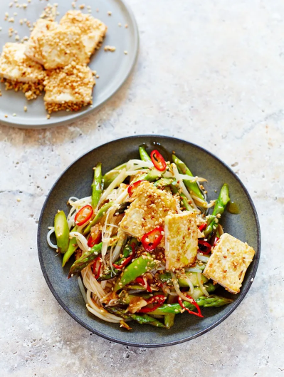

Asparagus Stir-Fry

“This recipe for stir-fried asparagus is a bright, flavorful way to
prepare the vegetable.”
Ingredients
Yield: 4 servings
- 350 g firm tofu
- 2 teaspoons groundnut oil
- 2 tablespoons sesame seeds
- ½ tablespoon cornflour
- 2 tablespoons soy sauce
- 1 tablespoon white wine vinegar
- 1 clove of garlic
- 1fresh red chilli, plus extra to serve
- 5 cm piece of ginger
- 320 g asparagus
- 150 g beansprouts
- 200 g rice noodles, to serve (optional)
Steps
- Place 350g of firm tofu on a plate lined with kitchen paper, then place another layer of
kitchen paper on top - this will help soak up some of the moisture. Set aside until ready to
use.
- Place a large frying pan over a medium heat, carefully cut
the tofu into quarters, then cut each piece into four again. Add 1 teaspoon of groundnut oil
to the pan, then add the tofu and leave to cook for 10 to 15 minutes, or until golden and crisp,
turning halfway. Remove to a bowl.
- Toast 2 tablespoons of sesame seeds in the pan, then toss with the tofu to coat.
- In a small bowl, mix ½ a tablespoon of cornflour, 2 tablespoons of soy sauce and 1
tablespoon of white wine vinegar until combined.
- Peel and finely chop 1 clove of garlic and trim and finely slice 1 fresh red chilli. Peel a 5cm
piece of ginger, then slice into matchsticks. Snap the woody ends from 320g asparagus, and
slice on the bias.
- Place a wok over a high heat and add 1 teaspoon of groundnut oil. Once hot, stir in the
garlic, chilli and ginger, followed by the asparagus and 150g of beansprouts. Cook for a
couple of minutes, or until everything is fragrant and golden, stirring continuously.
- Stir in the cornflour mixture, reduce the heat to medium and cook for 4 to 5 minutes, or
until the sauce has thickened, adding a splash of water, if needed.
- Serve the veggies alongside the tofu with some extra sliced red chilli and cooked rice
noodles, if you like